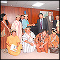
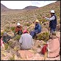

ventajas competitivas
- Somos un equipo interdisciplinario y con amplia experiencia.
- Expertos en la viabilizar objetivos empresariales y sociales en costa, sierra y selva.
- Interactuamos con diversos actores sociales: funcionarios, empresarios, líderes, ciudadanos.
- Nuestro enfoque de trabajo promueve alianzas estratégicas.
enfoques
Intercultural:
Reconocemos que el Perú y el mundo son un crisol de razas y culturas, y el trabajo de investigación implica rescatar la diversidad en todas sus formas. Por ello, E&O desarrolla su trabajo respetando y valorando toda forma de organización y cultura y sus perspectivas que de ella emanen, favoreciendo el entendimiento de estas realidades y contribuyendo a su desarrollo.
De Género:
Entendemos que el tema de género no es relativo solo a una cuestión de sexo, sino que se refiere a la relación establecida entre hombres y mujeres, su forma de organizarse en diferentes culturas y los roles que asumen en base a este. Guarda relación al papel que cumplen hombres y mujeres como agentes de desarrollo de sus sociedades en los aspectos de trabajo, desarrollo económico, vida familiar, servicios, medio ambiente y acceso a la vida pública e instancias de decisión. E&O toma como eje transversal el enfoque de género para comprender a profundidad y de manera real las sociedades donde dirige su investigación.
De Desarrollo sostenible:
Trabajamos bajo el enfoque de Desarrollo Sostenible entendiendo este como la interacción sociedad – naturaleza capaz de satisfacer las necesidades actuales sin comprometer los recursos y posibilidades de las futuras generaciones. Orientamos nuestro trabajo en la búsqueda del desarrollo, pero basados en el respeto al medio ambiente y social por parte de los gobiernos y de la sociedad en pleno.
De Responsabilidad social:
Nuestra injerencia en los campos de investigación y gestión del desarrollo revalora la responsabilidad social como un compromiso impostergable de todos los actores involucrados (Estado – Empresa – Sociedad) previendo los alcances e impacto en todo tipo de intervención.
De Seguridad:
E&O desarrolla sus actividades en el marco de seguridad laboral industrial, respetando las normas y procedimientos, destinados a preservar la integridad física de los trabajadores y garantizar las condiciones favorables en el ambiente en que desarrollamos nuestras actividades.
casos de exito
-
Relaciones Comunitarias en contexto adverso y con resultado exitoso
Diseñar, gestionar e implementa proyectos para viabilizar y generar la alianza Estado – Empresa – Sociedad con el objetivo de promover la inversión y desarrollo sostenible.
-

Relaciones Comunitarias en contexto adverso y con resultado exitoso
Participación Ciudadana para el Proyecto de Prospección Sísmica 3D y Perforación de 90 Pozos Exploratorios en el Lote Z-34, Región Piura, para la empresa Gold Oil Perú.
-

Elaboración de primer Proyecto de Inversión Pública a nivel nacional en el sector Cultura y con resultado exitoso
Rescate y Afirmación de las Expresiones Culturales de la Región San Martín” para potenciar la cultura como eje de desarrollo social.